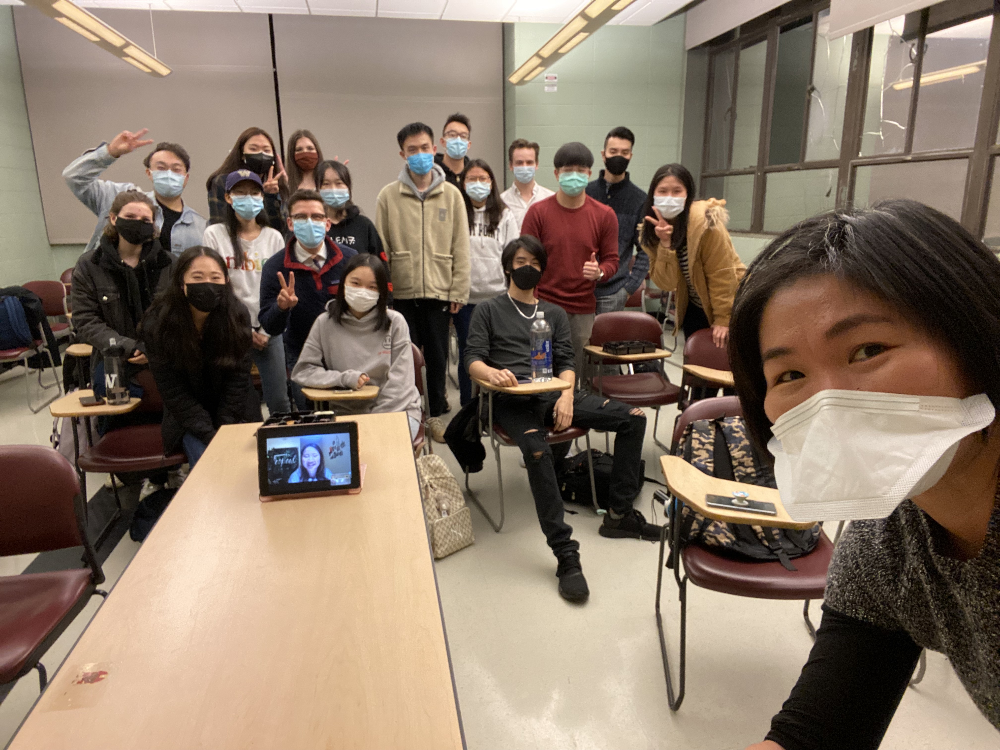

Year 4
Additional projects, papers, and photos from my fourth (and final) year at UW!
CSE 440 - Human-Computer Interaction (TA)
CHIN 342 - Chinese Linguistics
HONORS 221 - Game Theory
ENTRE 370 - Introduction to Entrepreneurship
HONORS 232 - The Urban Ecology of Seattle
ACM-W Engineer Your Passion Event
Snapshots

Got a picture with Dubs, our special guest at ACM's Spring BBQ event!
A group picture of my first fully in-person class this year (Autumn 2021)!

Visited Cornell Ithaca and Cornell Tech in the first week of Spring Quarter!